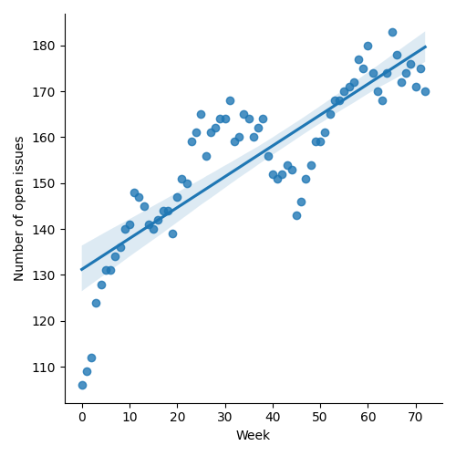
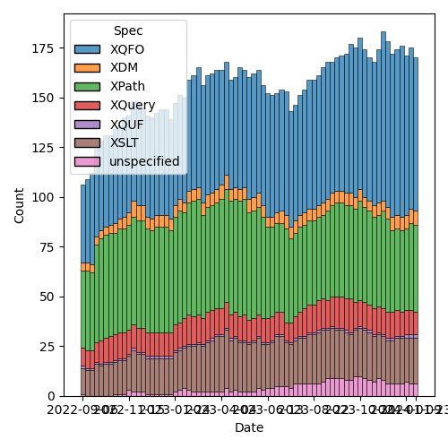
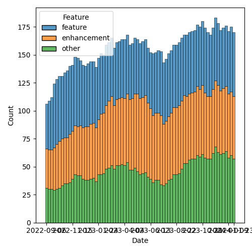

QT4 CG Meeting 063 Minutes 2024-01-30
Table of Contents
Meeting index / QT4CG.org / Dashboard / GH Issues / GH Pull Requests
Draft Minutes
Summary of new and continuing actions [0/10]
[ ]QT4CG-052-02: NW to consider how to schedule an “editor’s meeting”[ ]QT4CG-056-04: MK to write a proposal for adding a select attribute to xsl:text[ ]QT4CG-058-02: MK to consider providing more advice about the pitfalls of mixing decimal and double when sorting[ ]QT4CG-062-03: JK to revise the fn:hash function along the lines discussed at the meeting[ ]QT4CG-063-01: MK to revise #956 especially with respect to the options parameter[ ]QT4CG-063-02: JK to consider whether the roman numeral example is appropriate for the spec.[ ]QT4CG-063-03: DN to address the editorial remarks from meeting 063 in a new PR.[ ]QT4CG-063-04: NW to try to add test review to the editorial meeting.[ ]QT4CG-063-05: MK to revise PR #953 to take account of CG’s comments[ ]QT4CG-063-06: MK to consider refactoring the declare item type syntax to something like declare record
1. Administrivia
1.1. Roll call [12/13]
Regrets: MSM.
[X]Reece Dunn (RD)[X]Sasha Firsov (SF)[X]Christian Grün (CG)[X]Joel Kalvesmaki (JK) [:05-][X]Michael Kay (MK)[X]Juri Leino (JLO)[X]John Lumley (JLY)[X]Dimitre Novatchev (DN)[X]Wendell Piez (WP)[X]Ed Porter (EP)[X]Adam Retter (AR) [:10-][ ]C. M. Sperberg-McQueen (MSM)[X]Norm Tovey-Walsh (NW). Scribe. Chair.
Welcome, Adam!
1.2. Accept the agenda
Proposal: Accept the agenda.
Accepted.
1.2.1. Status so far…

Figure 1: “Burn down” chart on open issues

Figure 2: Open issues by specification

Figure 3: Open issues by type
1.3. Approve minutes of the previous meeting
Proposal: Accept the minutes of the previous meeting.
Accepted.
1.4. Next meeting
The next meeting is scheduled for Tuesday, 6 February 2024.
Any regrets for the next meeting? MSM?
1.5. Review of open action items [3/7]
[ ]QT4CG-052-02: NW to consider how to schedule an “editor’s meeting”[ ]QT4CG-056-04: MK to write a proposal for adding a select attribute to xsl:text[ ]QT4CG-058-02: MK to consider providing more advice about the pitfalls of mixing decimal and double when sorting[X]QT4CG-061-01: MK to review the comments CG made on the PR #927.[X]QT4CG-062-01: CG to make an email proposal of a list of functions (re issue #843) to add[X]QT4CG-062-02: MK to check that the expansion of subsequence gives the correct result when neither from nor to match (INF - INF)[ ]QT4CG-062-03: JK to revise the fn:hash function along the lines discussed at the meeting
1.6. Review of open pull requests and issues
1.6.1. Merge without discussion
The following PRs are editorial, small, or otherwise appeared to be uncontroversial when the agenda was prepared. The chairs propose that these can be merged without discussion. If you think discussion is necessary, please say so.
- PR #965: XQFO: minor edits and bug fixes
Proposal: accept without discussion.
Accepted.
2. Technical Agenda
2.1. PR #956: 850-partial Editorial improvements to parse-html()
See PR #956
Needs revision before discussion.
ACTION: QT4CG-063-01: MK to revise #956 especially with respect to the options parameter
2.2. PR #957: 948 Added fn:scan-left and fn:scan-right
See PR #957
DN introduces the PR, fn:scan-left and fn:scan-right.
- DN: JK provided some comments about how to improve the descriptions; thank you JK.
- … Signature of
fn:scan-leftis the same asfn:fold-leftbut the return type is different.
- … Signature of
- MK: Why are both arguments to the callback function sequences?
Some discussion of whether this is the same as fn:fold-left
- DN: You are probably right. I’ll check that.
DN continues to review the PR.
- DN: Similarly, signature of
fn:scan-rightis the same asfn:fold-rightbut the return type is different. - JLY: Is there a simpler definition, effectively taking partial subsequences of the input and then doing fold right or left on them and putting them together in an array. You wouldn’t do it that way, but it might be one way to define it.
- DN: Yes. I suggest we look at how these functions are defined in Haskell.
- … Since we’re aligning with these definitions, I think we should use the same summary.
- RD: The summary mentions “accumulators” but maybe that could be confusing with XSLT accumulators.
- DN: Yes, if we go with the Haskell definition, that use of “accumulators” will go away.
- MK: The aim of the summary isn’t precision, it’s tutorial. Finding a good summary is difficult. Perhaps we should think about it.
Some discussion of whether or not the Haskell definition is suitable for our specification.
- MK: Let’s focus on the technical questions before we worry about the editorial details.
- DN: The current definition of
fn:fold-leftis wrong.- … It’s wrong to provide positions to the fold function.
- … They should be removed from fold and where they are needed, there should be a separate overload so that the types work correctly.
- JK: I was just trying to point out an inconsistency.
- MK: We added the position argument as an optional argument to all the callbacks because there are use cases for them and they’re consistently provided that way in JavaScript. The equivalent function in JavaScript does have an index argument.
- JLO: I wanted to make the same remark as Mike; I have use cases where I need the position argument. It should be made clear that the third argument is optional.
- JK: Why not just increase the arity of fold-left so that it can produce the cumulative results. Why do we need two new functions.
- MK: I think the functions are sufficiently different that they should be different. They return different result types, for example.
- CG: We could think of returning a sequence, map-for-each for example
returns everything as a sequence but you can put them in arrays in
the action function if you want.
- … For some uses you don’t need the separate results.
- DN: Returning sequences is completely destructive, so we shouldn’t do that.
- CG: Have you thought about adding array:scan-left and/or array:scan-right, then you could work with arrays. If you use arrays, then you want to structure your data.
- DN: No, we have lots of use cases when the partial results are a sequence, that’s why we must not return just a sequence.
- CG: What about the array functions?
- DN: Array versions wouldn’t be a problem.
- JLO: I’m very much in favor of CG’s remark.
- JLY: It strikes me, can’t you make this in a fold-left or fold-right
by making the function returns a sequence of arrays of the partial
results? So if you wanted a scan-left you can make one with a
fold-left and a small wrapper function?
- … Is it sufficiently important to have a new function?
- DN: It can be done in many ways. There’s an implementation in the specification. It’s in lots of languages.
- MK: I’ve certainly come across cases where scan-left would be useful. I have doubts about scan-right.
- DN: Another use case is that both scan-left and scan-right can be used as tracing/debugging tools for people who are using fold-left and fold-right.
- NW: Having one without the other just seems like it would cause confusion.
- CG: The discusison about having two functions instead of just one. We have fold-left and fold-right but we know in practice that few people use fold-right.
- DN: A quick example is JK’s example of arithmetic on roman numbers that uses fold-right.
- CG: So please add an example.
ACTION: QT4CG-063-02: JK to consider whether the roman numeral example is appropriate for the spec.
Proposal: accept this PR.
Accepted.
ACTION: QT4CG-063-03: DN to address the editorial remarks from meeting 063 in a new PR.
- MK: We don’t normally product manage the test suite here, but it’s common to add PRs.
- DN: All of the examples should be tests.
- MK: There are often tests that aren’t suitable for the spec that are suitable for the test suite.
- RD: We can look at adapting the fold-left and fold-right tests.
- JK: Along those lines, I want to propose that we have some sort of orientation meeting about the test suites.
ACTION: QT4CG-063-04: NW to try to add test review to the editorial meeting.
2.3. PR #953: 617 Define record constructors
See PR #953
MK introduces the issue and describes the PR.
- MK: Note that there’s a method for generating an NCName if the record field isn’t.
- … There are rules for dealing with optionality.
- … We could make it nicer if we said that all optional fields have to come at the end.
- … But that’s not always natural either (consider ‘middleName’).
- … You can’t create extension fields this way.
- … It would be nice to start with a simpler example and CG doesn’t like my coding style. Fair points.
- JLY: The order is now critical in the record declaration. Can you label the names of the arguments in the call now?
- MK: Yes, you can use keywords for the arguments.
- JLO: I was wondering why the indicator for an optional argument is added to the name of the parameter instead of the type?
- MK: In the record syntax itself?
- JLO: Yes.
- MK: Because there’s a difference between allowing a field to be optional and allowing the value to be optional. The committee picked both.
MK proposes to discuss some of CG’s comments.
- MK: Do we want to back off allowing records with general string
properties to be used in constructor functions.
- … We could say you can’t have a constructor function for those records.
- NW: I don’t know. Depends how often the arise in practice, I guess.
- MK: I suggest that I revise it to take account of CG’s comments and put it back on the agenda to accept without discussion.
ACTION: QT4CG-063-05: MK to revise PR #953 to take account of CG’s comments
We’ll put the revised PR on the “accept without discussion” for next week.
ACTION: QT4CG-063-06: MK to consider refactoring the declare item type syntax to something like declare record
Some discussion of defaults.
- MK: My reservation is that there could be confusion about what defaults mean: that they don’t
mean that’s a value you get back if the key isn’t in the record.
3. Any other business
None heard.